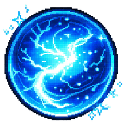
Se renforcer
De petites habitudes, répétées sans pression, forgent de grandes transformations. Chaque habitude validée dans la vraie vie te rapporte des Points de Maîtrise — la seule monnaie du jeu.
Habitudes · Kaizen
進化 SHINKA — ÉVOLUTION · 刀 TÔ — LAME
Shinkatô transforme ta vraie vie en RPG. Tes habitudes te renforcent jour après jour, ton territoire s'étend case après case, et tes obstacles prennent forme — pour être affrontés.
Pas de punition. Pas de série perdue. Chaque pas en avant reste acquis.
La vie ne se résume pas à cocher des cases. Elle se construit, elle s'étend, elle s'affronte. Shinkatô repose sur trois piliers indissociables — et tu peux les essayer ici même.

De petites habitudes, répétées sans pression, forgent de grandes transformations. Chaque habitude validée dans la vraie vie te rapporte des Points de Maîtrise — la seule monnaie du jeu.
Habitudes · Kaizen
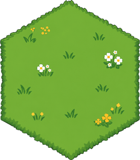
Ta carte est une terre inconnue en nid d'abeilles. Tu investis tes PM sur un hexagone voisin pour l'arracher à l'ombre — et découvrir ce qu'il cachait : coffre, parchemin, relique… ou écho.
Territoire · Expansion

Les Échos sont tes obstacles devenus créatures, et chacun porte un nom. On ne les frappe pas d'abord : on leur répond. Le combat est un duel de phrases — leurs pensées noires contre les tiennes.
Échos · Duel verbal
Voilà la boucle du jeu, en vrai : tu valides une habitude, tu gagnes des PM, tu les investis sur un hexagone. Vas-y — c'est jouable.
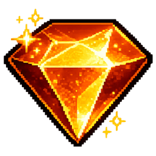
0 PE 3 PV 1 conquisClique sur une case pour la révéler.
Je ressens une forme d'énergie sous ces terres… mais l'ombre les recouvre encore.
Dans la vraie vie
Ex. : « 10 pompes ». Chaque habitude tenue te rapporte 3 PM — la force qui ouvre la carte.
Un écho ne se balaie pas d'un clic. Il te jette une pensée à la figure — et tu choisis quoi lui répondre. Voici un vrai combat de Shinkatô, avec le vrai texte du jeu.
L'ÉCHO DE LA SEMAINE
« Reste où tu es. Le seuil est bien trop haut pour toi. »
…
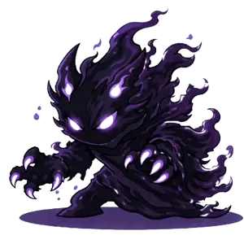
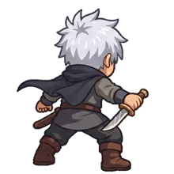
C'EST LE MOMENT — ACHÈVE-LE
REPOUSSÉ
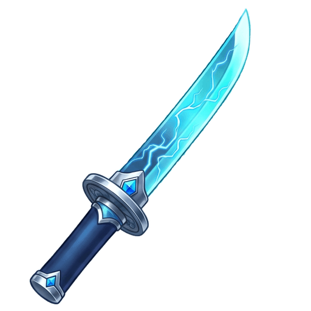
Éclat de lameDans l'application, ce butin part vraiment dans ton profil — et Tamerai revient plus fort la prochaine fois.
« Tamerai tient encore debout. Ce n'est pas une défaite : c'est un rappel. Renforce tes habitudes, reviens plus fort. » — Kaen
Dans la vraie vie, l'effort est invisible. Ici, chaque action compte, se voit, et reste acquise.
La maîtrise gagnée en tenant tes vraies habitudes. C'est avec eux que tu étends ton territoire.
Trouvés dans les coffres et les victoires. Ils débloquent de nouvelles habitudes : ton évolution finance ton évolution.
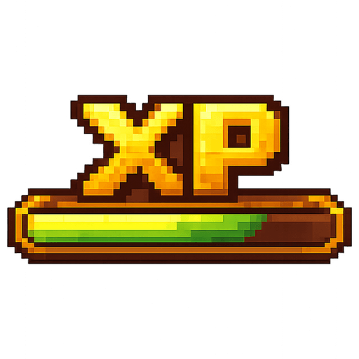
Ton niveau raconte ton parcours. Il monte, il ne redescend jamais — comme tout ce que tu construis ici.
Ton tantô est le reflet de ta progression. Chaque écho repoussé le renforce ; chaque lame ouvre la voie vers des obstacles plus grands. Pas de classes, pas de hasard : seulement toi, ta lame, et le chemin.
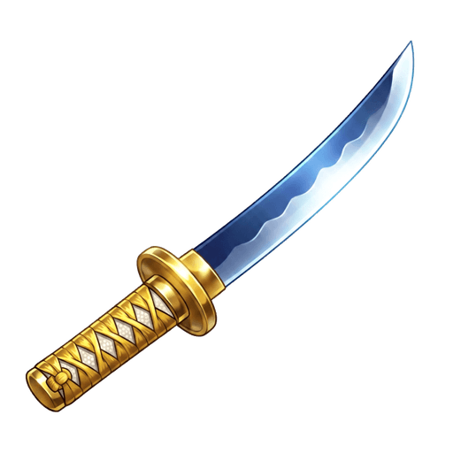
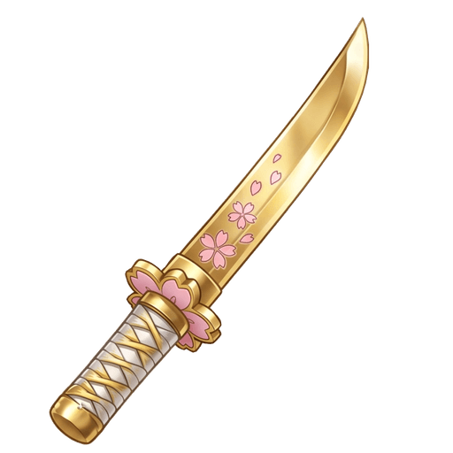
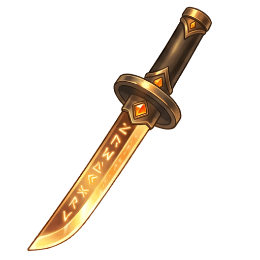
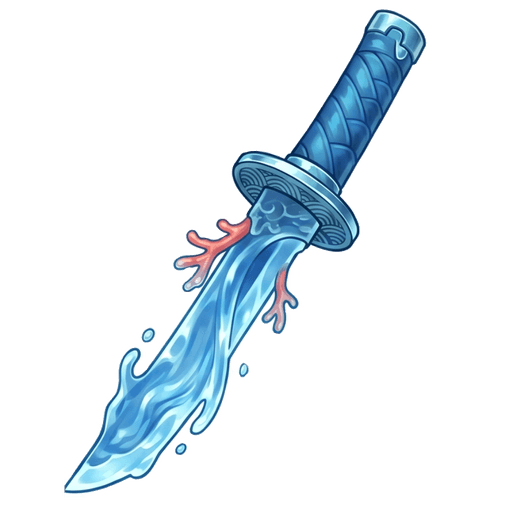
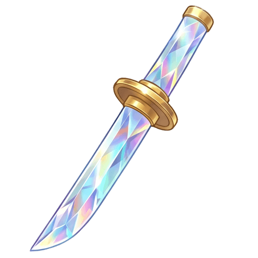
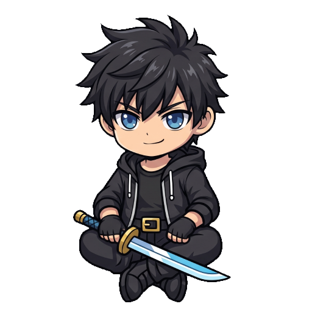
« Je ne vois pas ce que tu es aujourd'hui. Je vois ce que tu deviens. Chaque petit pas t'appartient — personne ne pourra te le reprendre. »
Kaen guide celles et ceux qui choisissent la voie de l'évolution. Il n'exige rien, ne punit jamais : si tu t'arrêtes un temps, ta flamme t'attend, intacte.
Shinkatô arrive bientôt sur Google Play et l'App Store.
Sois parmi les premiers héros à ouvrir le Chapitre I.
Les partenaires Shinkatô vivent dans le jeu : votre marque devient un allié retenu par un écho, votre histoire une quête, vos offres des trophées à conquérir. Un tableau de bord dédié suit vos quêtes, vos trophées et vos retombées.
Déjà partenaire ? Votre tableau de bord vous est fourni avec vos identifiants.
Parchemin d'histoire